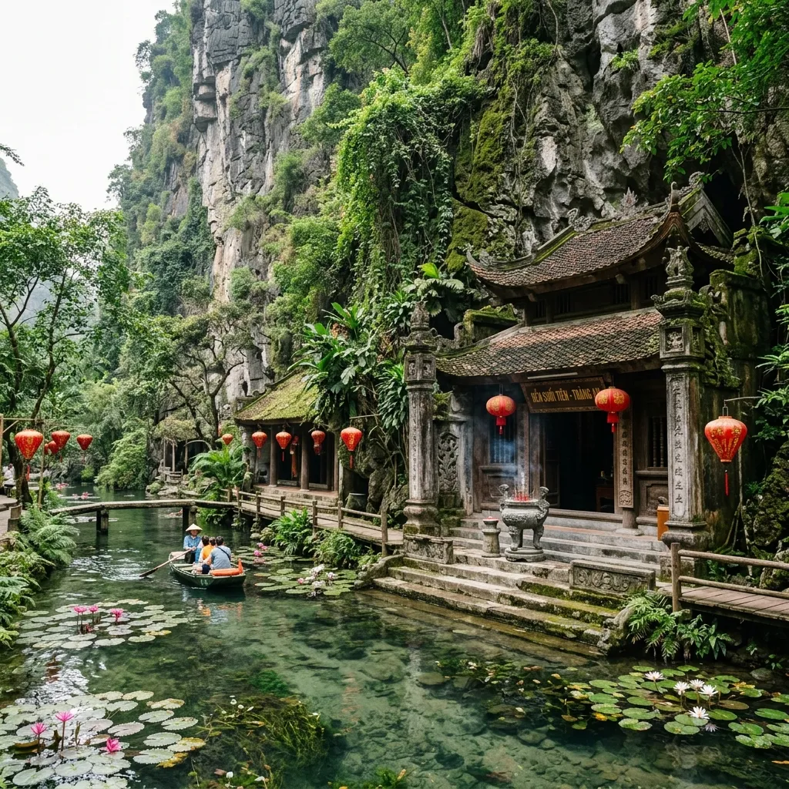
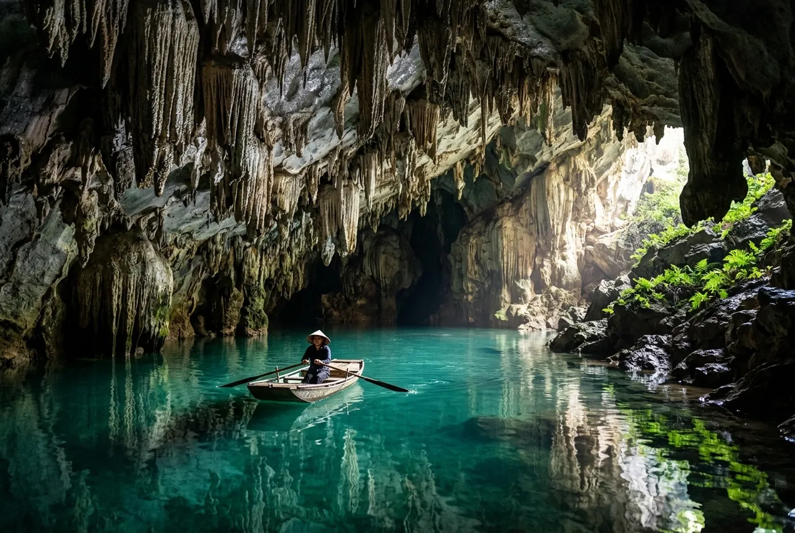
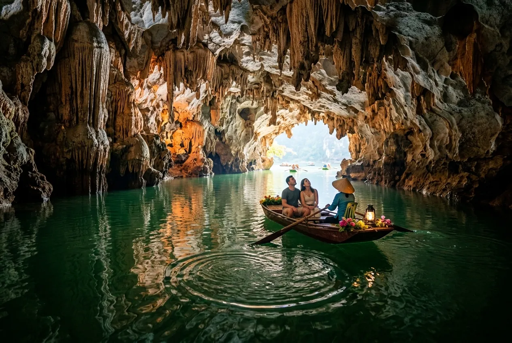

📋 Tổng quan di sản
Năm 2014, Tràng An chính thức được UNESCO vinh danh là Di sản Thế giới kép (hỗn hợp) đầu tiên và duy nhất của Đông Nam Á, đáp ứng cả ba tiêu chí khắt khe về Văn hóa, Thẩm mỹ và Địa chất địa mạo.
Khác với những khu du lịch thông thường, giá trị di sản đặc biệt của Tràng An nằm ở hai lớp trầm tích:
• Lớp trầm tích địa chất triệu năm: Là một "bảo tàng địa chất ngoài trời" lưu giữ dấu vết biến đổi vỏ Trái Đất và các đợt biển tiến, biển thoái kiến tạo nên tháp karst đá vôi đứng độc lập, bao quanh bởi các thung lũng ngập nước lững lờ trong vắt.
• Lớp lịch sử nhân loại 30.000 năm: Các đợt khai quật khảo cổ tại các hang động (như hang Bói, hang Trống) đã phát hiện vỏ ốc biển, xương thú, công cụ đá cổ xưa — minh chứng cho thấy tổ tiên người Việt cổ đã cư trú tại đây, thích nghi vượt qua các thời kỳ biển dâng khắc nghiệt của biến đổi khí hậu toàn cầu.
Trải nghiệm Tràng An không có chỗ cho sự vội vã. Xuôi theo những chiếc thuyền nan nhỏ do người dân địa phương chèo tay mộc mạc xuyên qua các hang động ngầm hẹp tối, chạm tay vào những khối nhũ đá rủ tí tách nước, bạn sẽ cảm nhận rõ ràng linh hồn của một di sản sống động đang thở nhịp nhàng giữa bốn bề vách đá sừng sững.
Những câu chuyện lịch sử & Lời nguyện ước gửi gắm
Mỗi bước chân đi qua non nước Tràng An không chỉ là một chuyến vãn cảnh, mà là một hành trình chạm vào linh hồn của lịch sử. Hãy chọn một điểm đến dưới đây để lắng nghe câu chuyện ngàn năm, và gửi gắm những nguyện ước của riêng bạn:
1. Hành cung Vũ Lâm — Từ chiến trường oai hùng đến cõi lòng tự tại
Thủy Đình cổ kính giữa lòng hồ tại phân khu Hành cung Vũ Lâm
Câu chuyện lịch sử: Vào thế kỷ XIII, giữa tiếng vó ngựa dồn dập và khói lửa của cuộc kháng chiến chống Nguyên - Mông lần thứ hai, hoàng đế Trần Thái Tông đã chọn những thung lũng dốc đá vôi ngập nước của Tràng An để lập nên Hành cung Vũ Lâm. Nơi đây từng là một căn cứ quân sự ngầm hiểm trở đầy mưu lược, giúp quân dân nhà Trần bảo toàn lực lượng trước kẻ thù hung hãn nhất thế giới thời bấy giờ. Khi giặc tan, chính vị vua oai hùng ấy đã trút bỏ hoàng bào, buông bỏ mọi vinh hoa phú quý để khoác lên mình tấm áo nâu sồng, xuất gia tu hành tại Am Vũ Lâm, đặt những viên gạch đầu tiên cho sự ra đời của Thiền phái Trúc Lâm Yên Tử.
2. Đền Trần (Đền Nội Lâm) — Sự bảo hộ vững chãi qua thăng trầm
Cổng đá uy nghiêm rêu phong của Đền Trần ẩn sâu giữa lòng núi đá vôi
Câu chuyện lịch sử: Ngôi đền đá cổ kính này được vua Đinh Tiên Hoàng xây dựng làm trấn ải phía Nam của kinh đô Hoa Lư cổ, thờ vị tướng Quý Minh Đại Vương trấn giữ biên thùy. Trải qua ngàn năm dông bão, đền được dựng lại bằng đá xanh nguyên khối chạm khắc rồng cuộn tinh xảo từ thời nhà Trần. Hình ảnh những cột đá vững chãi gánh vác mái đền rêu phong qua bao thế kỷ chính là biểu tượng cho sự kiên trung, bảo hộ vững chắc cho giang sơn bờ cõi.
3. Phủ Khống — Tấm lòng son sắt và tình tri kỷ ngàn năm
Phủ Khống trầm mặc nép mình dưới chân vách đá karst bên mặt nước phẳng lặng
Câu chuyện lịch sử: Nép mình bên vách hang Khống rậm rạp cây lá, Phủ Khống thờ 7 vị quan trung thần triều Đinh. Khi vua Đinh Tiên Hoàng bị sát hại, để giữ bí mật tuyệt đối về ngôi mộ thật của nhà vua, 7 vị quan đã tự tay an táng đức vua tại các hướng khác nhau rồi cùng tuẫn tiết để mang bí mật ấy xuống lòng đất. Người giữ đền Phủ Khống sau này vì cảm động trước nghĩa khí son sắt ấy đã lập đền thờ phụng họ. Ngay bên cạnh phủ là cây thị cổ thụ ngàn năm tuổi, kỳ lạ thay lại sinh ra hai loại quả (tròn và dẹt) trên cùng một cành, như sự hòa hợp âm dương, tượng trưng cho sự sắt son và lòng trung trinh bất tử.
4. Đền Suối Tiên — Nơi dấu chân Tiên cảnh & Uy danh Đức Thánh Quý Minh

Đền Suối Tiên cổ kính soi bóng bên dòng suối mát xanh trong vắt
Câu chuyện lịch sử: Đền tọa lạc nơi thượng nguồn dòng Suối Tiên xanh trong vắt soi bóng tận đáy hồ, là nơi thờ vọng Đức Thánh Quý Minh Đại Vương (vị thần trấn ải phía Nam Hoa Lư tứ trấn) cùng phu nhân của ngài. Đền được dựng lên để ghi nhớ công ơn canh giữ biên cương, bảo vệ mùa màng của ngài từ thời Hùng Vương thứ 18. Tên gọi "Suối Tiên" bắt nguồn từ truyền thuyết dân gian kể rằng phong cảnh nơi này hoang sơ, thanh khiết đến kỳ lạ, khiến các nàng tiên trên trời thường trốn xuống đây tắm mát và dạo chơi mỗi chiều hoàng hôn.
5. Đền Trình (Phủ Đột) — Nơi gửi gắm lòng trung quân ái quốc
Đền Trình (Phủ Đột) rêu phong tọa lạc bên dòng sông xanh biếc dẫn lối vào di sản
Câu chuyện lịch sử: Đền có lịch sử hơn 1.000 năm, thờ 4 vị công thần khai quốc triều Đinh gồm: Nguyễn Bặc, Đinh Điền, Lưu Cơ và Trịnh Tú. Khi Đinh Tiên Hoàng Đế băng hà, triều đình xảy ra biến loạn lớn, các vị tướng đã kiên trung bảo vệ ấu chúa Đinh Toàn đi tránh nạn. Đền còn có tên gọi là Phủ Đột, mang ý nghĩa là nơi trình diện đầu tiên. Theo truyền thống dân gian, đây là nơi du khách dừng đò dâng hương, "trình báo" tấm lòng thành kính để xin các vị thần linh che chở trước khi đi sâu vào vùng lõi di sản.
6. Đền Thánh Cao Sơn — Sự chở che oai nghiêm cửa ngõ Hoa Lư
Đền thờ thần Cao Sơn cổ kính ẩn sau vách núi karst sừng sững
Câu chuyện lịch sử: Đây là nơi thờ thần Cao Sơn Đại Vương (Lạc tướng Vũ Lâm, con thứ 17 của Lạc Long Quân), một trong bốn vị thần linh thiêng nhất trấn giữ bốn hướng của kinh thành Hoa Lư cổ (Trấn Tây). Thần Cao Sơn là người có công hộ quốc an dân, dạy dân cách làm ruộng trồng lúa nước, tìm ra cây quang lang để ăn chống đói và bảo hộ muôn dân trước thú dữ núi rừng hiểm trở.
7. Hệ thống xuyên thủy động kỳ vĩ (Tuyến 1 & 2)

Các hang động xuyên thủy mang vẻ đẹp kỳ ảo tự nhiên của Quần thể di sản Tràng An
Câu chuyện lịch sử: Tràng An sở hữu hệ thống hang động ngầm liên kết chằng chịt, mỗi nơi mang một câu chuyện và đặc tính riêng biệt:
• Hang Địa Linh & Hang Thánh Trượt: Hang Địa Linh (Hang Châu Báu) óng ánh thạch nhũ vàng bạc. Hang Thánh Trượt gắn liền với thiền sư Nguyễn Minh Không triều Lý đi tìm lá thuốc quý chữa bệnh cứu vua Lý Thần Tông, vì quá say sưa ngắm cảnh mà trượt chân ngã trên dốc đá nơi này.
• Hang Tối & Hang Sáng: Cặp hang động dài 320m (Hang Tối) và 100m (Hang Sáng) nối liền nhau. Tên gọi tượng trưng cho triết lý tuần hoàn của vũ trụ và niềm khao khát vươn ra khỏi nghịch cảnh để đón ánh sáng tương lai của người xưa.
• Hang Lấm, Hang Vạng & Hang Đại: Những hang động nguyên sơ rêu phong. Hang Đại rộng lớn tới 200m từng là nơi ẩn quân đồn trú chiến lược của quân sĩ triều Đinh - Lê.
8. Mê cung Hang Mây & Điển tích Hang Sính (Tuyến 1 & 3)

Vòm nhũ đá trắng muốt phủ kín lòng hang Mây tựa như dải mây bồng bềnh
Câu chuyện lịch sử: Hai tuyệt tác hang động gắn liền với vẻ đẹp thiên nhiên và giai thoại lãng mạn:
• Hang Mây (Hang Vân): Xuyên thủy động dài gần 1.000m (dài nhất Tràng An). Trần hang được bao phủ bởi thạch nhũ trắng muốt mềm mại rủ xuống bồng bềnh tựa như mây ngàn.
• Hang Sính: Gắn liền với câu chuyện tình duyên trắc trở nhưng son sắt thời Đinh - Lê. Chàng trai chuẩn bị sính lễ đến hang để cầu hôn nàng nhưng hay tin nàng phải đi cống nạp nước láng giềng để giữ yên bờ cõi. Chàng vì quá đau lòng đã gieo mình xuống dòng sông ngầm hang Si kế bên. Dòng lệ sầu thương kết tinh lại thành những giọt nước rơi róc rách giữa lòng hang.